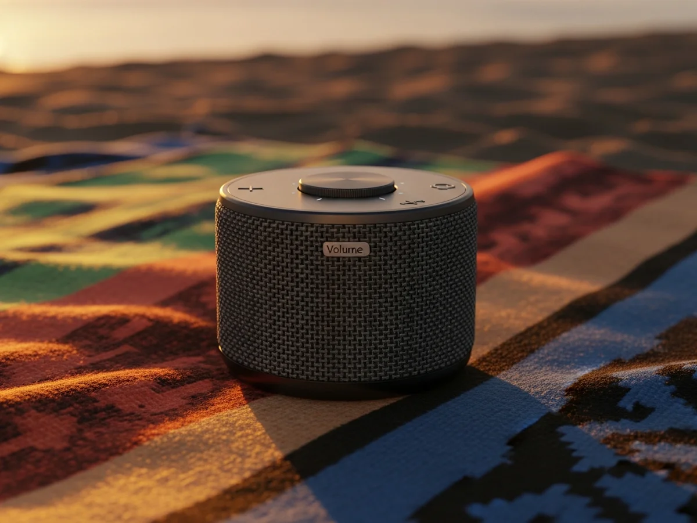
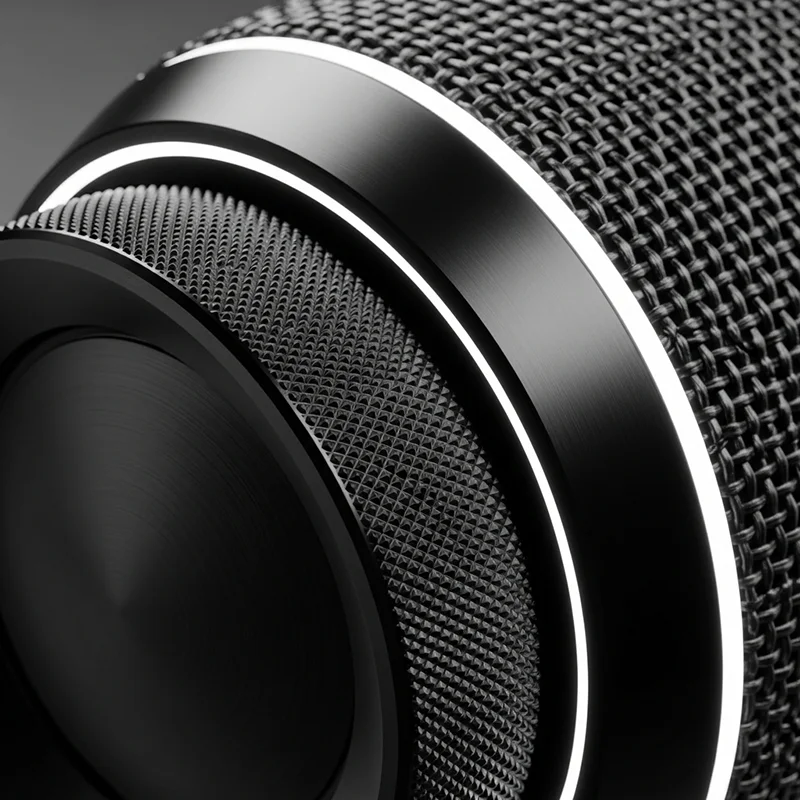
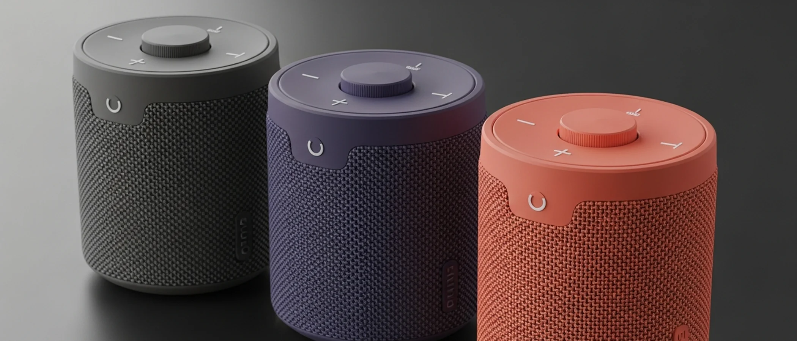

La tua musica non ha bisogno del tuo telefono
La tua
musica,
dentro.
KERN porta le tue playlist direttamente dentro lo speaker. Sincronizzi una volta a casa. Poi esci — senza telefono, senza distrazioni, senza compromessi.
Spedizione gratuita
Ne parlano
WIRED, Esquire, Monocle, GQ, DOMUS, ICON

Non è uno speaker.
È una scelta.
Ogni volta che apri Spotify apri anche tutto il resto. Le notifiche, i messaggi, le distrazioni. KERN nasce da un'idea semplice: la musica dovrebbe vivere nello speaker, non nel telefono. Sincronizzi le tue playlist via Wi-Fi a casa. Poi esci. E non guardi più lo schermo.
-
Indipendente dal telefono
La musica vive dentro KERN. Nessun Bluetooth da mantenere, nessuna batteria del telefono da scaricare, nessuna notifica che interrompe.
-
64GB di memoria interna
Fino a 15.000 brani in alta risoluzione sempre con te. FLAC, ALAC, WAV, MP3 — qualità che si sente, spazio che non finisce.
Ogni dettaglio
ha un motivo.
Alluminio anodizzato, tessuto acustico premium, ghiera del volume con feedback fisico preciso. Non è estetica — è sostanza.
Audio a 360°
Doppio tweeter al neodimio e subwoofer rivolto verso il basso. Bassi profondi, alti presenti — in ogni direzione, senza punto cieco.

24 ore di autonomia
Nessuna connessione attiva da mantenere. La batteria da 8000mAh dura il doppio degli speaker tradizionali — un weekend intero senza caricarlo.
“Ho messo il telefono in borsa e per la prima volta ho ascoltato davvero la musica.”
Scegli il tuo KERN.
Alluminio anodizzato opaco e tessuto acustico premium. Tre colorazioni, una sola identità.

Smetti di dipendere
dal telefono.
La tua musica è già dentro.
- Spedizione gratuita in 24/48h
- 30 giorni per il reso gratuito
- Garanzia italiana 24 mesi